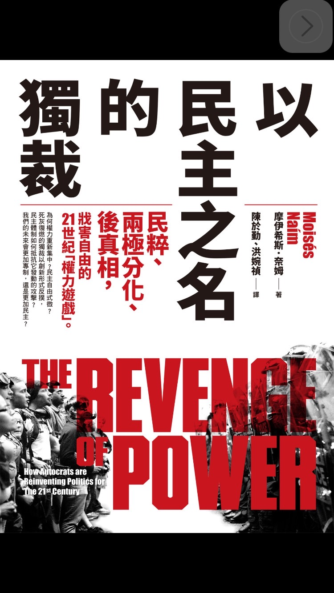

摩伊希斯．奈姆-以民主之名的獨裁(商周出版)

這本書"以民主之名的獨裁"，會吸引我的原因，是因為有一次在LINE的群組有人鑒於現在不僅台灣，各國的政治也趨向民粹政治。原本採用民主政治的國家，左派和右派會相互競爭，相互監督，相互制衡，在這樣的情形下，左派和右派保持這樣的平衡關係，雖然效率低落，但是可以確保權力不會集中在某一個獨裁者的手上。然而由於左派及右派的失能，沒有辦法藉由上述方式，改善人民的生活，若這時有一個不屬於左派或右派的人選，又站在底層階級的一方，並且不停地攻擊左派及右派的菁英階層，這個人選自然就會受到支持。
這個人選，也就是後來所謂的3P獨裁者，透過頗為民主的方式獲得權力，再以民粹主義(Populism)、兩極分化(Polarization)、後真相(Post-truth)的手段拆掉行政權上的制衡系統，藉此鞏固權力。
民粹主義通常是站在菁英主義的對立面。支持民粹主義的人認為，就是因為菁英在帶領國家的這個位置上待得太久了，他們沒辦法聽進人民的聲音，沒有辦法做出對人民有利的決定。儘管菁英是依照嚴謹的論點以及程序，來做出決定，但是往往效率低下，甚至做出可能不利於人民的決定(儘管可能有利於國家)。這時3P獨裁者就利用這樣的心理，藉由人民對菁英階級的長久以來的厭惡，來達成他的目的。
兩極分化在於藉由激化兩方的對立，並利用民主制度上(選舉)的缺陷，讓3P獨裁者有機可乘。他只需要鞏固他的支持者及粉絲，操作議題及政見讓對立激化，即可達到目的，他的政見是否合理不重要，只要能夠堅定穩度既有的粉絲及支持者，並且加深支持者及反對者之間的仇恨，即可達到目的。
後真相的手法不在於要闢謠或是抹黑對手，而是利用一些似是而非的科學論述，或是利用一些可能看起來很像是真實的信息，來混淆大眾的認知，讓大眾分不清真正的事實或真偽。尤其現在網路及社群媒體的發達，以往舊有傳播媒體的把關機制已經失效，因為如果傳統媒體沒有跟風報導導致失去收視率，傳統媒體將無法在現在社會生存下去。後真相時代大家已經不在乎事實，反而在乎的是自己主觀認定的事實。
難道我們的社會或是世界就會在這樣的狂潮下，成為3P獨裁者壟斷的情形嗎?當然不是。我們除了可以堅守民主的信念外，我們也可以藉由制度的設計，讓選舉選出來的人可以貼近大多數人的共識，而不是因為制度上的缺失，造成只有少數人支持的候選人反而當選的現象。作者認為，排名選擇投票制(ranked-choice voting)就是現有改革方案中，最有可能壓制3P獨裁者的野心的一個。在這個制度中，每個人不只投一票，而是按照喜好依序排出第一、第二、第三順位的候選人，這樣得到最多最低順位的候選人，就不可能當選，如此就可以避免極端的投票情形(得到少數激進選票的人，票數沒有過半卻當選的情況)。
本書除了討論3P獨裁者之外，亦有針對超大型跨國企業，會利用本身的優勢或是獨佔性，欺負其他較弱勢的企業，造成商業上失去競爭，進而形成商業上的壟斷及獨裁情形。對於商業上壟斷的探討，也是這本書十分特別的地方。
延伸閱讀:
永久檔案-愛德華史諾登[Kindle]使用Calibre+DeDRM，幫你去除亞馬遜(Amazon)電子書的DRM
另外，美國購物代運可參考:
https://a1253247.blogspot.com/p/hopshopgo-vs-spexeshop.html
對板球有興趣的可參考:
https://a1253247.blogspot.com/2022/05/cricket-line-written-by-admin-24-10.html
對生活飲食有興趣，可參考: